Unofficial study solution; not an official GTU answer key. Answers have not been independently verified. English text reflows; source equations, diagrams and Gujarati retain their original appearance. Use Enlarge image to inspect them.
આ બિનસત્તાવાર અભ્યાસ ઉકેલ છે, સત્તાવાર GTU જવાબવહી નથી. PDF માંથી ગુજરાતી લખાણ સાચું નીકળતું નથી, તેથી દરેક જવાબ મૂળ ચિત્રરૂપે જાળવ્યો છે. વાંચવા માટે ચિત્ર મોટું કરો. મૂળ પ્રશ્ન અને પરીક્ષાના વિકલ્પોની સૂચનાઓ અનુસરો.
Coverage: all 28 printed parts, including every OR alternative, are answered in English and easy Gujarati. The paper is 70 marks; OR alternatives do not add marks.
Questions: the paper declares its English version authentic. English questions are reproduced with line breaks and spaces normalised; Gujarati question meanings are unofficial study aids.
Reading the answers: diagrams are schematic, not working drawings. Any numerical example is illustrative, not supplied examination data. Standards and values are edition-specific; use the governing project standard for practice.
Paper discrepancy: Q3(a) OR says impact and abrasion in English, but impact and crushing in Gujarati. As the paper declares English authentic, the solution answers impact and abrasion.
Status: unofficial study material, not an official GTU answer key. The original question paper is unchanged and kept as a separate PDF.
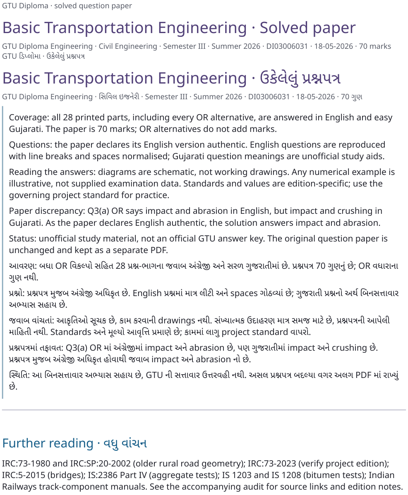
Question 1
Q1 · Road institutions, geometry and transport
Q.1 (a) · When was Indian roads congress formed? write four function of IRC. · 3 marks
The Indian Roads Congress (IRC) was formed in December 1934, following the Jayakar Committee’s recommendations.
1. Prepare and update road and bridge codes, specifications and guidelines.
2. Provide a national forum for engineers to exchange experience through meetings and conferences.
3. Publish technical journals, manuals and research findings.
4. Promote research, training and improved road safety / engineering practice.
Example: an engineer consults the applicable IRC geometric-design standard when planning a rural road. IRC guidance must be read with the project’s governing specification.
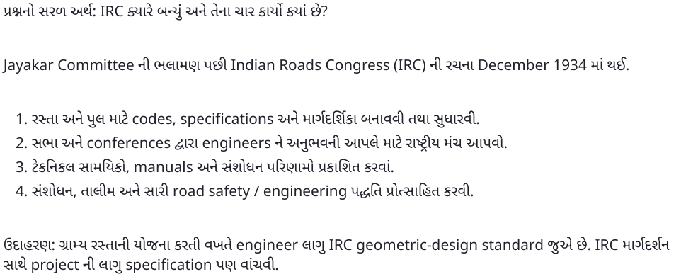
Q.1 (b) · Explain vertical curves on road. · 4 marks
A vertical curve smoothly joins two different longitudinal gradients in a road profile, avoiding an abrupt change in slope.
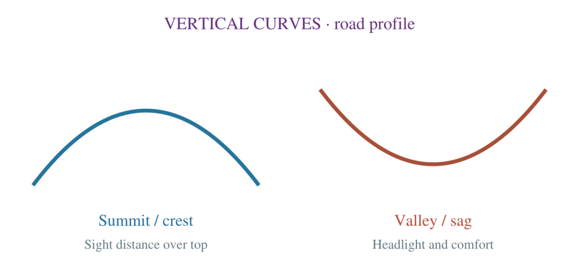
Schematic road profiles: summit / crest is convex; valley / sag is concave.
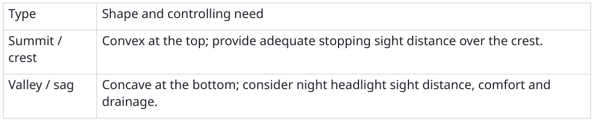
Example: a parabolic curve can join an uphill and a downhill grade. Its length depends on design speed, grade change, sight distance and applicable standards; avoid ponding at a sag.
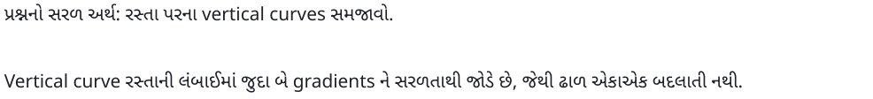
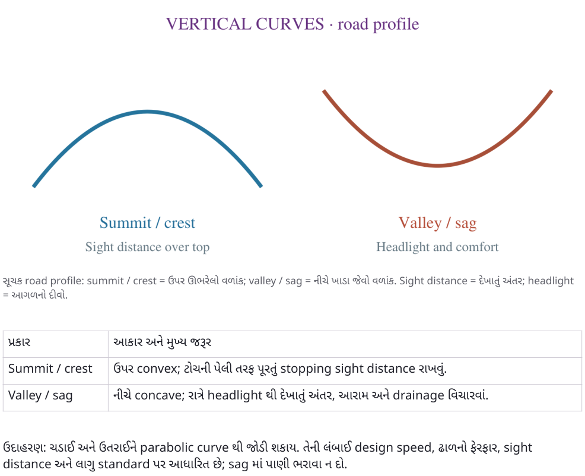
Q.1 (c) · Explain various mode of transportation. · 7 marks
A mode of transportation is a system for moving people or goods using a particular path and vehicle.
![Q.1 (c): preserved source formula, table or diagram, page 5. Extracted text context (formula notation may be incomplete): Mode Use / advantage Main limitation Road Flexible door-to-door travel; feeds other modes. Congestion, crashes and higher cost for very large bulk. Rail Efficient for large passenger or freight flows over distance. Fixed tracks and terminals; not generally door-to-door. Water Ships carry heavy bulk or containers at low unit cost on suitable routes. Slow; depends on navigable water and ports. Air Very fast for long-distance passengers and urgent high-value cargo. High cost, weather and airport dependence. Pipeline Continuous movement of oil, gas or suitable liquids / slurry. Restricted commodities and fixed route; leakage needs control. Ropeway / cableway Moves people or material over difficult hills and valleys. Limited capacity and special terminal / maintenance needs.](summer-2026.assets/0006.webp)
Example: a container can go by truck to a port, by ship to another port, then by rail. Combining modes uses the strengths of each; choose by demand, distance, cost, safety and environmental impact.
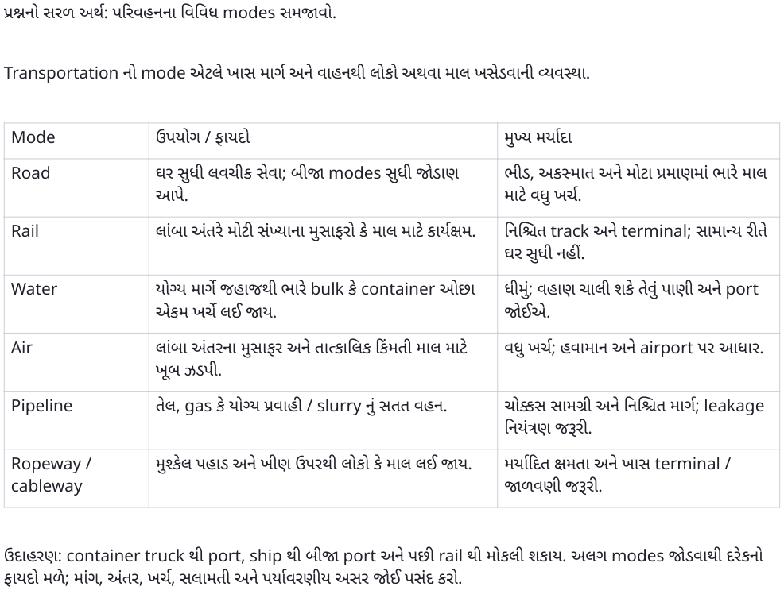
Q.1 (c) · In the context of National growth give importance of road development. · OR · 7 marks
Road development expands and maintains a safe network that connects people and economic activities; it is important for national growth because:
1. Agriculture: farmers reach markets, storage, seeds and services with less delay and spoilage.
2. Industry and trade: raw materials reach factories and finished goods reach customers and ports.
3. Employment and local business: construction, transport, tourism and market access create opportunities.
4. Social access: villages gain access to schools, hospitals and essential public services.
5. National integration: remote regions connect with cities and with each other.
6. Defence and emergencies: personnel, equipment and relief can move where needed.
7. Other modes: roads provide first- and last-mile links to rail stations, ports and airports.
Example: an all-weather village road can connect farms to a market and an ambulance to a hospital. Benefits require maintenance, road safety, equitable access and attention to land and environmental impacts.
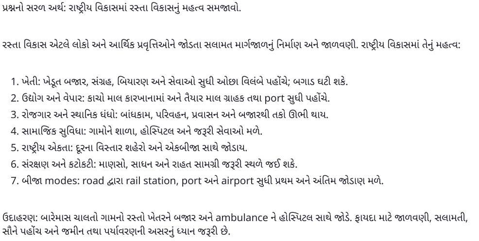
Question 2
Q2 · Sight distance, gradients and materials
Q.2 (a) · Distinguish between stopping sight distance and overtaking sight distance. · 3 marks
Sight distance is the length of road visible ahead to the driver under defined conditions.
![Q.2 (a): preserved source formula, table or diagram, page 7. Extracted text context (formula notation may be incomplete): Point Stopping sight distance (SSD) Overtaking sight distance (OSD) Purpose See an obstruction and stop safely before reaching it. See enough clear road to pass a slower vehicle and return safely, allowing for opposing traffic. Includes Perception–reaction travel plus braking distance. Distance travelled during the passing manoeuvre, opposing vehicle movement and safety clearance. Application Basic minimum safety on all road sections. Needed where overtaking is to be permitted; normally longer than SSD.](summer-2026.assets/0009.webp)
Example: a crest may have enough visibility to stop but not enough to pass safely. Design values depend on speed, geometry and the applicable code.
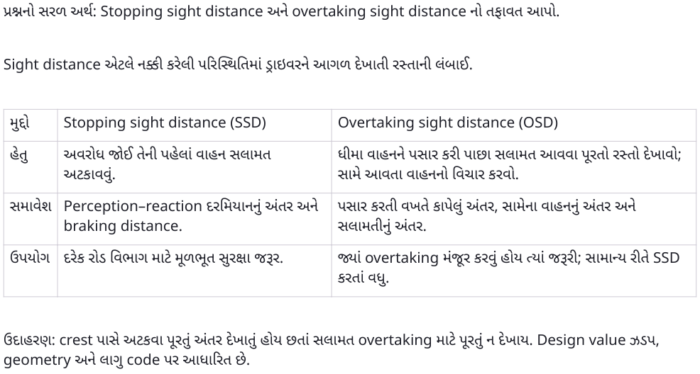
Q.2 (b) · Explain following gradient with IRC Standard (1) Ruling gradient. (2) Minimum gradient. · 4 marks
Gradient is the longitudinal rise or fall of the road. Ruling gradient is the desirable maximum grade ordinarily aimed at in design; a steeper limiting grade is used only where justified.
Minimum gradient is a small longitudinal fall provided where necessary to drain water, especially in cuts or kerbed sections. It is not the same as transverse camber.
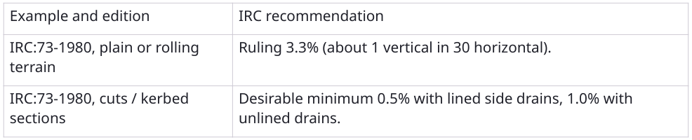
Example: 0.5% means a 0.5 m fall in 100 m horizontally. Values differ by road class, terrain and edition: a published IRC:73-2023 presentation gives 2.5% ruling for 2–8 lane highways in plain / rolling terrain and 3.3% for MDR / ODR / VR. Check the governing current code before design.
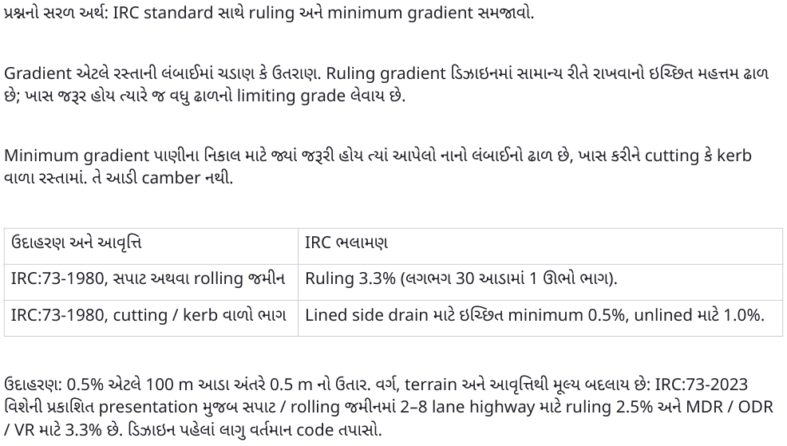
Q.2 (c) · Describe ductility test on bitumen with sketch. · 7 marks
Ductility is the distance in centimetres through which a standard bitumen briquette stretches before breaking under specified temperature and pulling speed. It indicates ability to deform without immediate rupture.
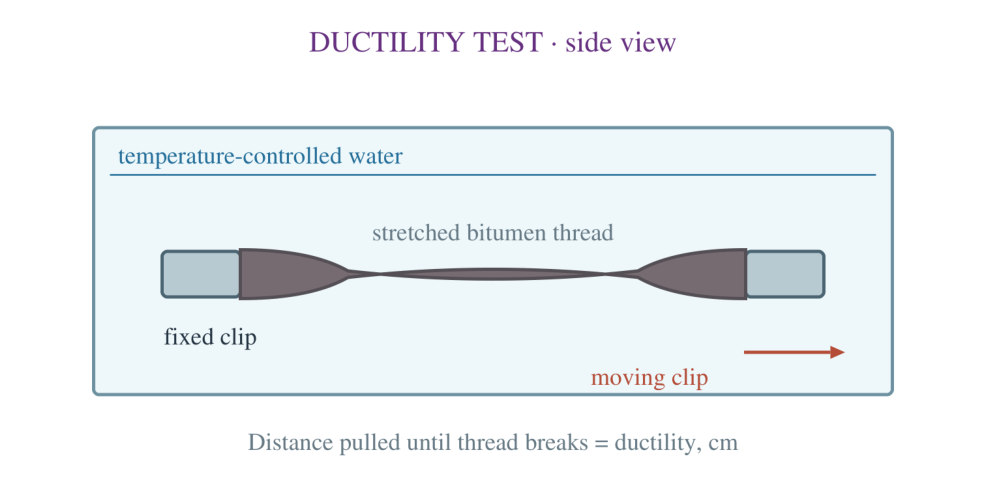
Schematic: briquette between fixed and moving clips in a temperature-controlled water bath.
Construction — apparatus and purpose
1. A standard briquette mould and base plate form the specimen with end clips.
2. A ductility machine grips one fixed and one moving clip and measures travel on a scale.
3. A water bath maintains the specified test temperature and keeps the specimen submerged.
Working — step and reason
1. Apply a suitable release coating to the mould, heat the bitumen carefully, pour into the assembled mould and allow it to cool.
2. Condition in the bath, trim the excess level, condition again as specified and remove the side pieces without straining the briquette.
3. Attach both clips, zero the scale and pull steadily under water until the thread breaks; keep it from touching the bath surface or bottom.
4. Record the extension at rupture in cm. Repeat and report the mean or a greater-than-machine- travel result as required by the adopted standard.
Edition / normal test Temperature Pulling speed
IS 1208 (Part 1):2023 25 ± 0.5 °C 50 ± 2.5 mm/min
IS 1208:1978, older teaching method 27 ± 0.5 °C 50 ± 2.5 mm/min
Illustration: if a specimen breaks after 72 cm of travel, its observed ductility is 72 cm at the stated conditions. This is not a value supplied in the question. Compare the required mean against the applicable grade specification; temperature, strain rate and test validity matter. Do not mix the two editions.
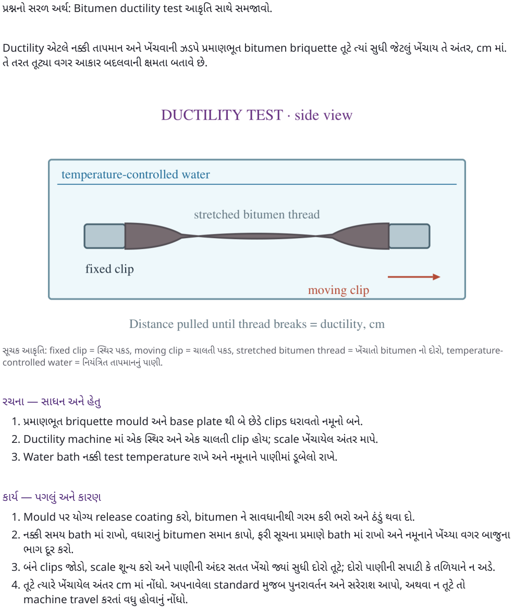
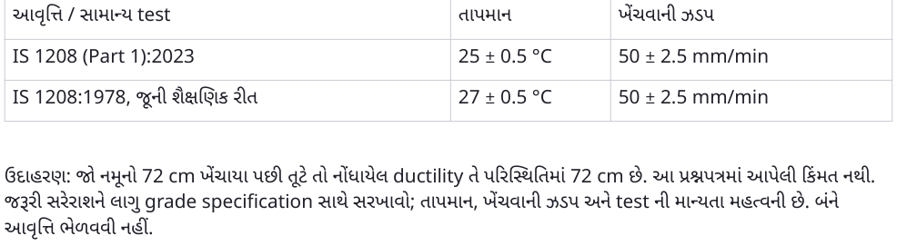
Q.2 (a) · Distinguish between Perception times and break reaction time. · OR · 3 marks
For this comparison define the intervals explicitly:
![Q.2 (a) OR: preserved source formula, table or diagram, page 11. Extracted text context (formula notation may be incomplete): Point Perception time Brake reaction time Interval From appearance of a hazard until the driver perceives / recognises it. From recognising the need to brake until the driver begins operating the brake. Main action Seeing and recognising the obstruction. Deciding and moving the foot to the brake. Example Seeing and identifying a pedestrian. Moving the foot and starting to press the brake.](summer-2026.assets/0016.webp)
Terminology varies between texts. The common 2.5 s design value for SSD is a combined perception–reaction allowance, not 2.5 s plus another reaction time. Braking distance after application is separate.
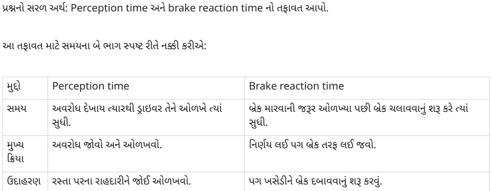
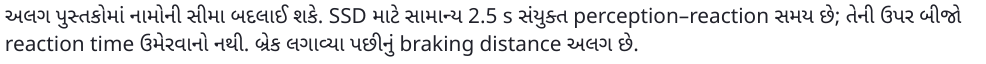
Q.2 (b) · Define design speed. What are the factors affecting it? Give IRC recommendations for village roads in rolling terrains. · OR · 4 marks
Design speed is the selected speed used to coordinate geometric features such as curve radius and sight distance; it is not automatically the posted speed limit.
• Selection depends on road class and function, terrain, traffic mix and volume, safety, land and construction cost.
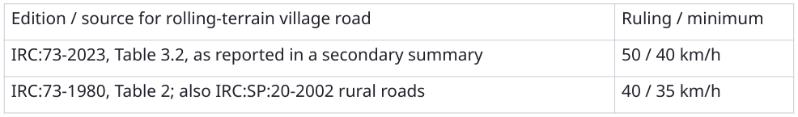
Example: use the ruling value as the normal design target; a minimum may be used where conditions justify it. Do not mix editions: check the actual governing code, road category and project specification before design.
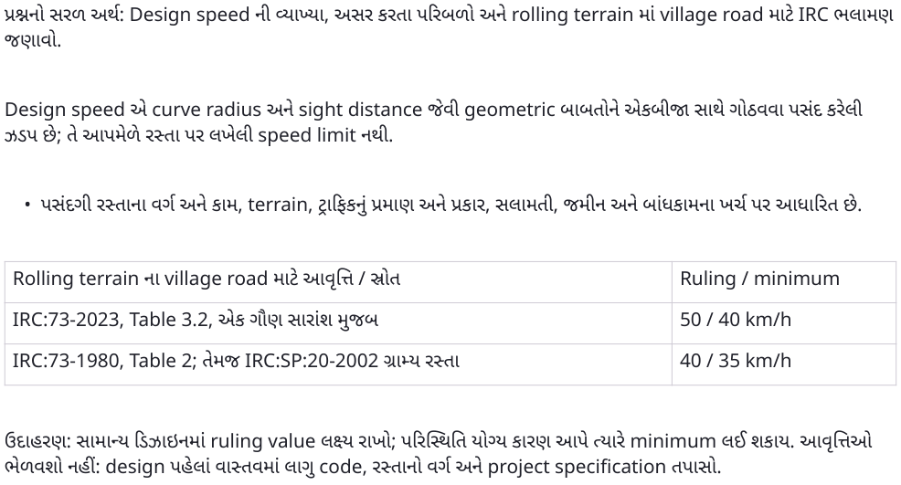
Q.2 (c) · Describe aggregate crushing value test with sketch. · OR · 7 marks
The aggregate crushing value (ACV) is the percentage of fines produced by a standard gradually applied compressive load. It indicates resistance to crushing in pavement aggregate.
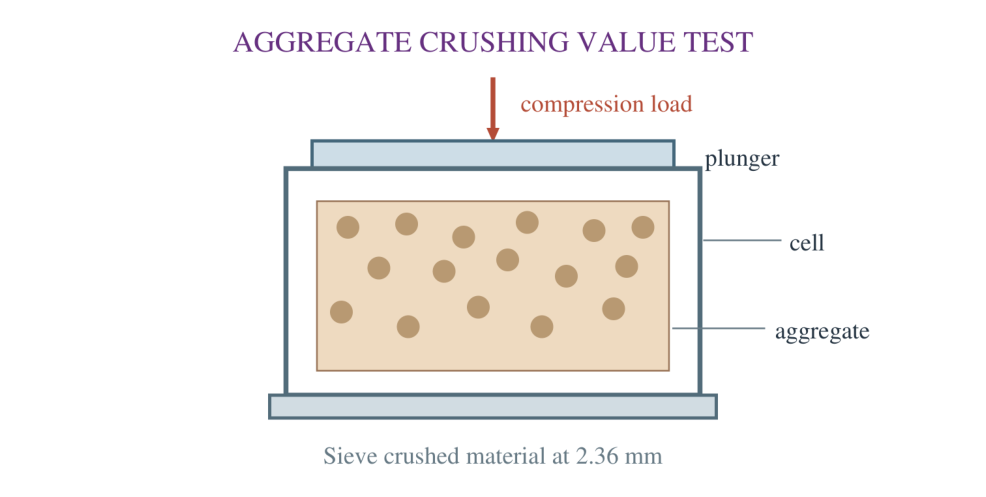
Schematic: compression load acts on the plunger over aggregate in the steel cell; fines are sieved after unloading.
Construction — apparatus and purpose
1. A 150 mm steel cylinder, base plate and freely fitting plunger contain and load the specimen.
2. A measuring cylinder and tamping rod prepare an approximately standard quantity; a compression machine applies the load.
3. 12.5 mm, 10 mm and 2.36 mm sieves and a balance select material and measure fines.
Working — step and reason
1. Select aggregate passing 12.5 mm and retained on 10 mm. Use surface-dry material; if heated dry, use 100–110 °C for no more than 4 h and cool it before testing.
2. Fill the measuring cylinder in three equal layers, tamping each 25 times; level and weigh the test portion as A.
3. Put the portion in the test cylinder in three layers, tamping each 25 times. Level it and seat the plunger without jamming.
4. Load uniformly to 40 tonne-force (approximately 392 kN, often rounded to 400 kN) in 10 min; release the load.
5. Remove all material without losing fines, sieve through 2.36 mm and weigh the passing fraction B. Repeat on a second test portion and report the mean as prescribed.
Illustration — one test portion, not data from the paper
A = 3000 g
B = 750 g

3. Calculate — ACV = 25.0%
Illustrative ACV of this portion = 25.0%
Check: fines are one quarter of the sample, so 25% is reasonable. Lower ACV generally means greater resistance to crushing. Compare the mean with the limit for the specified pavement use; test size, method and loading standard matter.
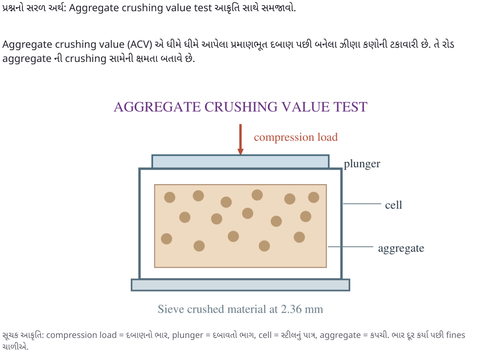
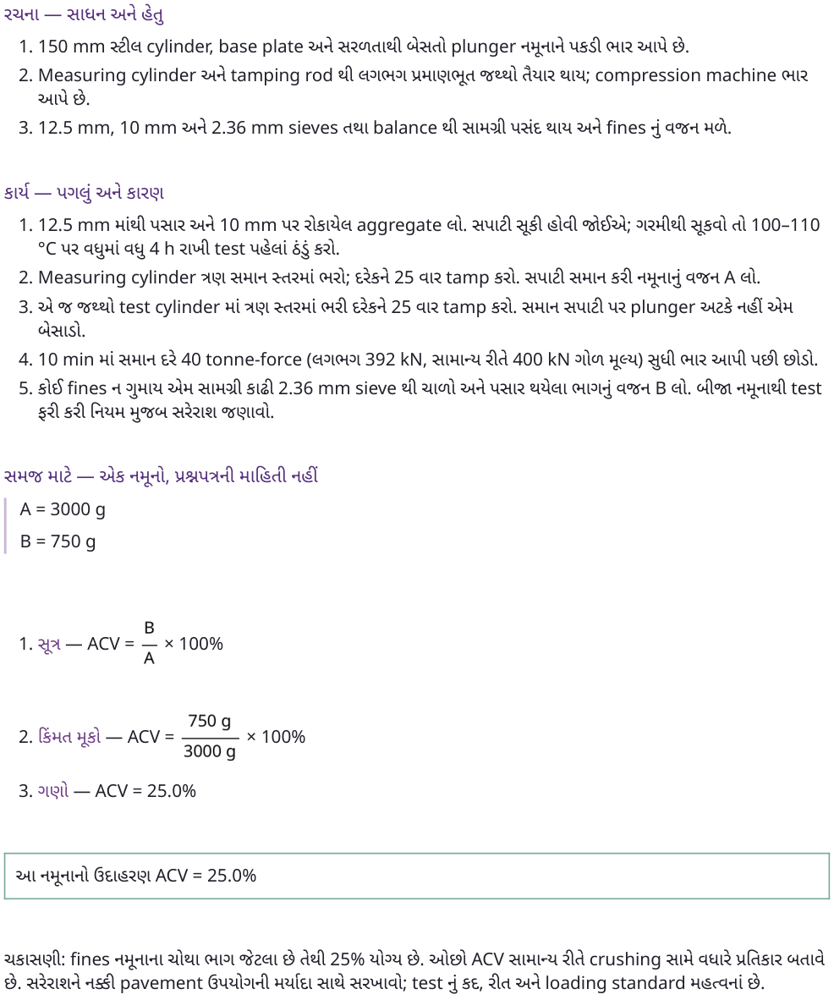
Question 3
Q3 · Bitumen, bridges and drainage
Q.3 (a) · What is flash point and fire point of bitumen? Which instrument use to find it. · 3 marks
Flash point is the lowest temperature at which bitumen vapour gives a momentary flash when a test flame is applied under specified conditions. Fire point is the lowest temperature at which the vapour continues to burn for at least 5 s under the specified test.
• A Cleveland open-cup apparatus with cup, heater, thermometer and test flame is used for the applicable open-cup method.
• These temperatures guide safe heating; the fire point is normally above the flash point.
Example: control mixing temperature below the binder’s specified safe heating limit. Flash and fire point depend on the prescribed apparatus and method.
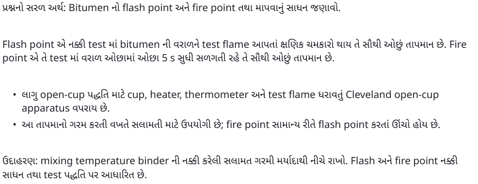
Q.3 (b) · Why bearing is provided on the bridge? Explain rocker type bearing in detail. · 4 marks
A bearing transfers the bridge reaction to the pier or abutment while permitting the movements and rotation required by the design. A rocker is a metallic expansion-bearing arrangement.
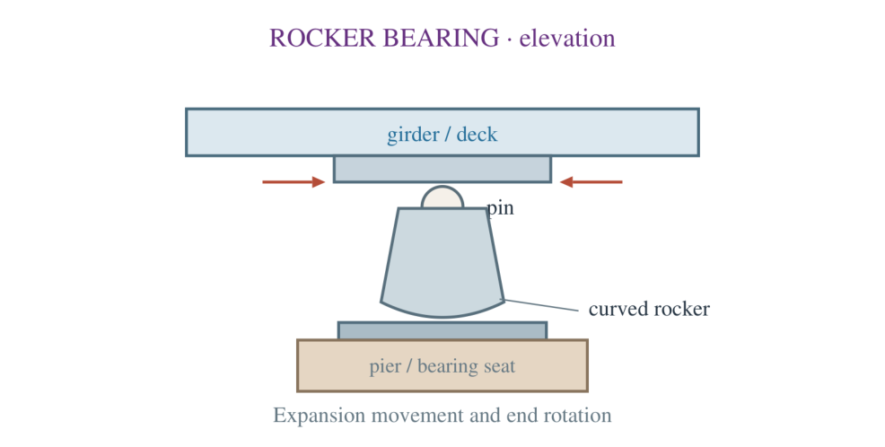
Schematic rocker bearing: deck, upper pin, curved rocker, bed plate and pier. Arrows indicate allowed longitudinal movement.
Construction — part and purpose
1. The upper plate attaches to the girder; a pin permits end rotation.
2. A steel rocker has a curved lower contact surface on a bed plate fixed to the pier.
3. Guides / restraints are provided as designed to control unwanted lateral movement and carry the specified horizontal loads.
Working — step and reason
1. The girder passes its vertical reaction through the pin and rocker to the pier.
2. When the deck expands or contracts, the curved rocker rocks on the bed plate to accommodate longitudinal movement; the pin permits rotation.
Example and limit: an expansion end of a steel bridge may use a rocker bearing. Inspect for corrosion, seizure and movement obstruction; the exact arrangement is project-specific.
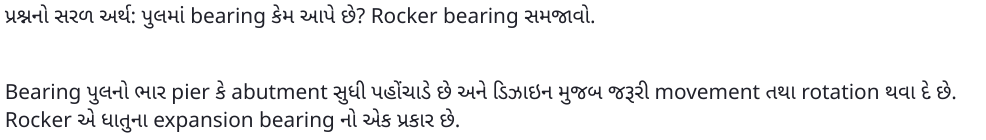
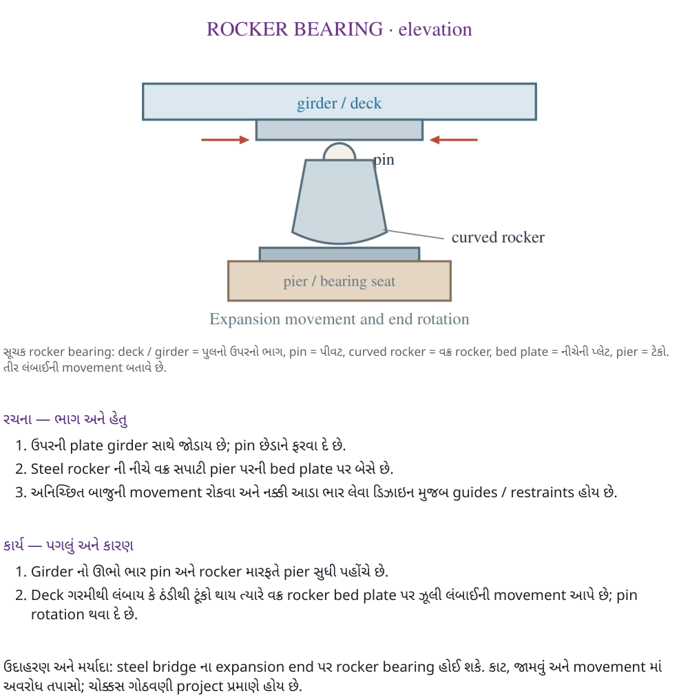
Q.3 (c) · Explain with neat sketch side drain for road in cutting. · 7 marks
A side drain in cutting collects runoff from the pavement and cut slopes and carries it along the road to a safe outlet, protecting the pavement and excavation.
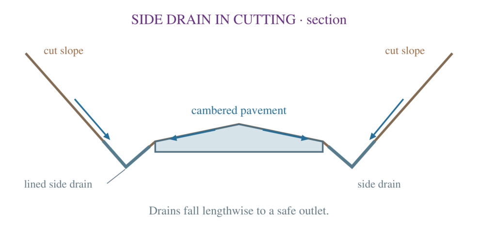
Cross-section, not to scale: cambered pavement, cut slopes and lined side drains; longitudinal flow to an outlet is perpendicular to this view.
Construction — part and purpose
1. Provide a cambered pavement and shoulders so surface water reaches the edges.
2. Form side drains between the roadway and cut slopes, with a suitable cross-section and longitudinal fall.
3. Line drains where velocity, erosion or soil conditions require it; use suitable inlets, culverts and protected outlets.
4. Where necessary provide a catchwater drain above the cutting to intercept hillside runoff; use subsurface drains if groundwater enters.
Working — step and reason
1. Rain runs down the cut slope and across the cambered road into the side drains.
2. The longitudinal fall carries water to a cross-drain or natural outfall; outlet protection dissipates erosive flow.
3. Inspect and remove silt / vegetation, repair lining, and keep outlets open, especially before and after monsoon.
Example: a lined drain along a clay cutting prevents standing water beside the pavement. Size and slope depend on catchment, rainfall, flow, soil, safety and governing design standards; do not drain onto an unstable slope.
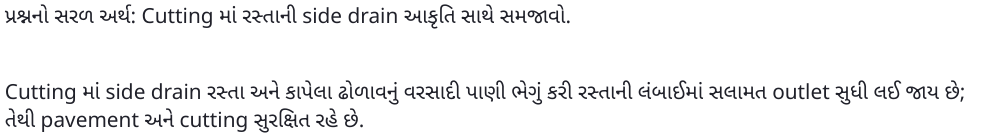
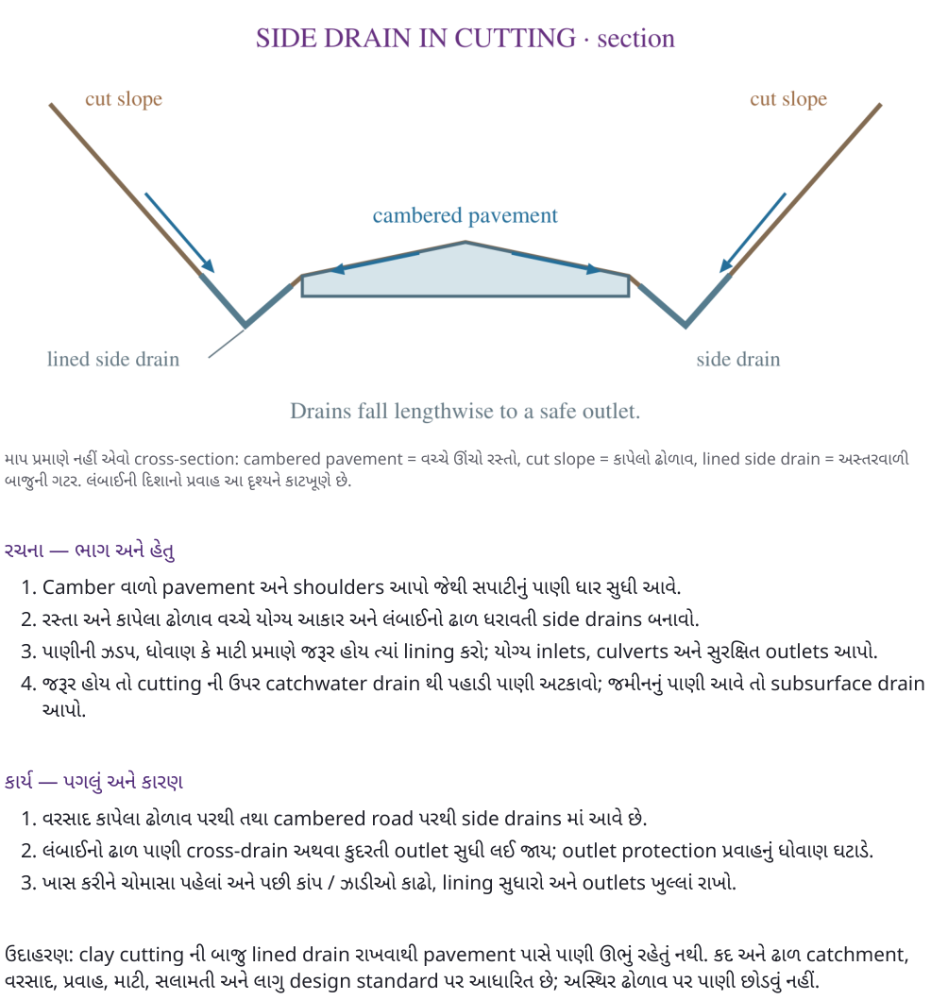
Q.3 (a) · Why we performed impact value and abrasion value test on aggregate. · OR · 3 marks
Impact value measures aggregate resistance to sudden blows (toughness); abrasion value measures resistance to wearing / rubbing action.
• In an impact test a standard hammer gives repeated blows; the percentage of resulting fines indicates resistance to impact.
• In a Los Angeles abrasion test aggregate and steel balls rotate in a drum; the percentage loss indicates resistance to abrasion and impact together.
• Generally a lower value indicates greater resistance under the respective test; select limits for the pavement layer and standard.
Example: wearing-course aggregate needs resistance to both traffic impact and surface wear. Paper note: the English question says “impact and abrasion”, while its Gujarati text says impact and crushing; English is declared authentic, so impact and abrasion are answered here.
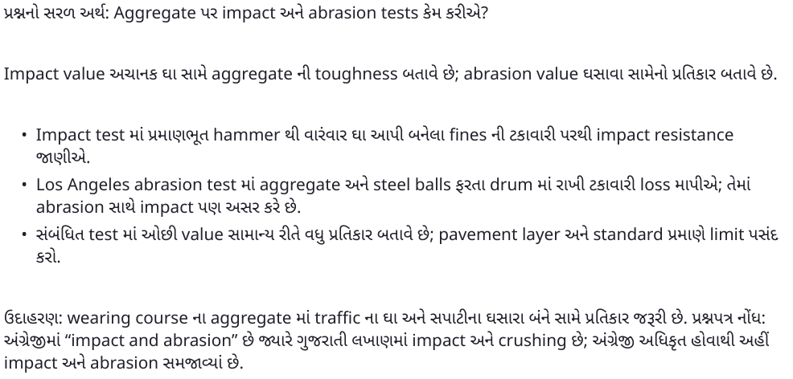
Q.3 (b) · List various types of piers. Explain any one with neat sketch. · OR · 4 marks
A pier is an intermediate support between bridge spans. Forms include solid wall / solid shaft, multiple-column or bent, hammerhead, hollow and pile-bent piers; selection depends on site and design.
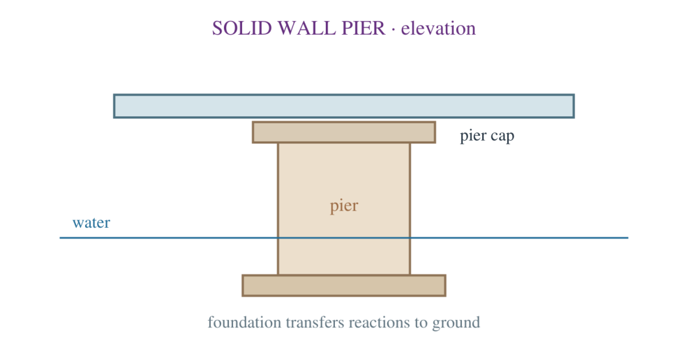
Schematic solid wall pier: deck reaction reaches the pier cap, pier body and foundation.
Solid wall pier — part and working
1. A pier cap supports the bearings and distributes reactions to the pier body.
2. The solid concrete or masonry wall transfers vertical and designed lateral loads to the foundation.
3. The foundation carries loads to suitable ground; the shape and bed protection are designed for flow and scour.
Example and limit: a solid pier may support two short spans in a river. It obstructs some flow and requires adequate waterway and scour protection.
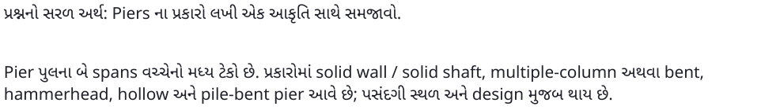
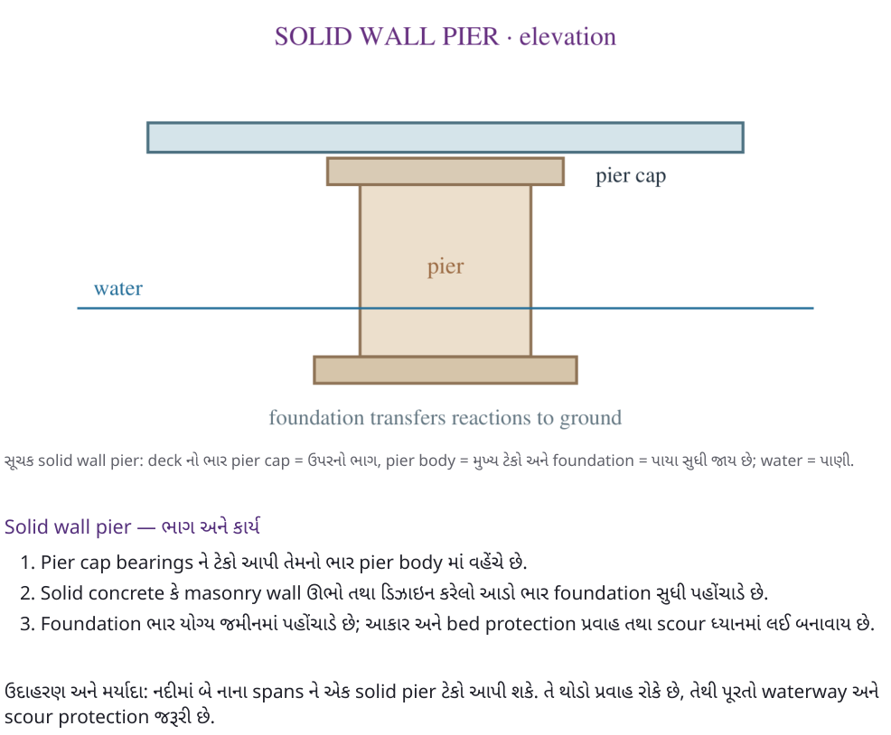
Q.3 (c) · Explain with neat sketch suspension bridge. · OR · 7 marks
A suspension bridge supports its deck from hangers attached to main cables draped over towers and anchored at their ends. It is useful for long spans where intermediate river supports are difficult.
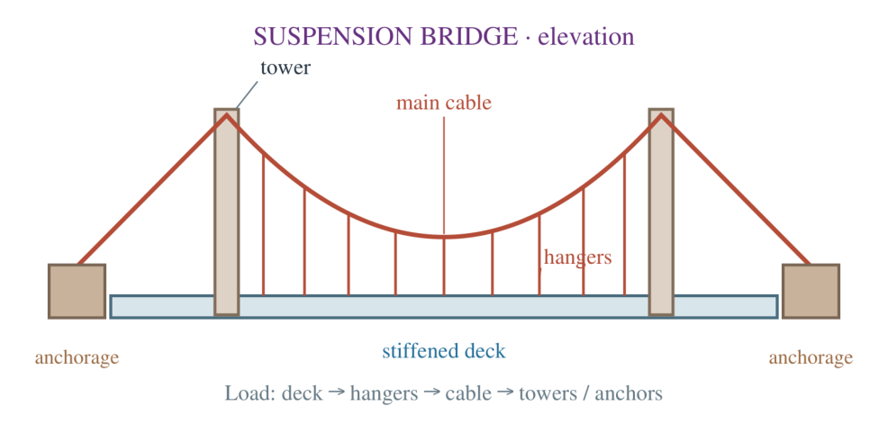
Schematic elevation: main cable, towers, vertical hangers, stiffened deck and end anchorages.
Construction — part and purpose
1. Two towers on foundations support the main cable at high points.
2. Main steel cables carry tension and are secured to strong anchorages at the ends.
3. Vertical hangers connect the cable to a stiffened deck / girder carrying traffic.
4. Bearings, expansion joints, barriers and drainage accommodate movement and support safe service.
Working — step and reason
1. Traffic loads act on the deck, which distributes them to the hangers.
2. Hangers transfer load to the tensioned main cables; cables pass forces to the towers and end anchorages.
3. Towers carry compression to foundations; anchorages resist cable tension. Deck stiffening and aerodynamic design control movement.
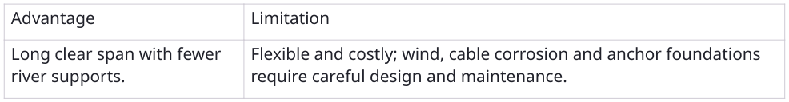
Example: a wide navigable river can remain largely unobstructed below a long span. The drawing is a load-path sketch, not a design or a guarantee of suitability.
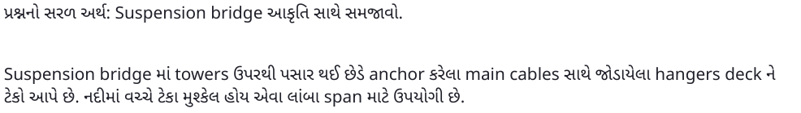
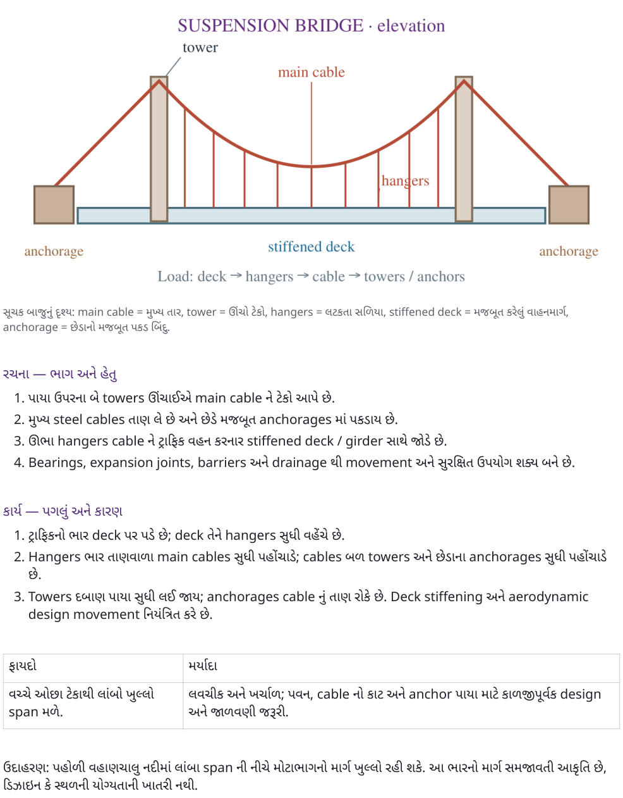
Question 4
Q4 · Highway drainage and railway track
Q.4 (a) · Explain importance of highway drainage. · 3 marks
Highway drainage collects and safely removes surface and subsurface water from the pavement and road formation.
• It prevents waterlogging, loss of subgrade strength and premature pavement failure.
• It reduces potholes, stripping and erosion of shoulders or embankments.
• It improves skid resistance and reduces splash, hydroplaning and road closures.
Example: camber directs rain to a side drain and culvert. A drain works only if its outlet is safe and clear.
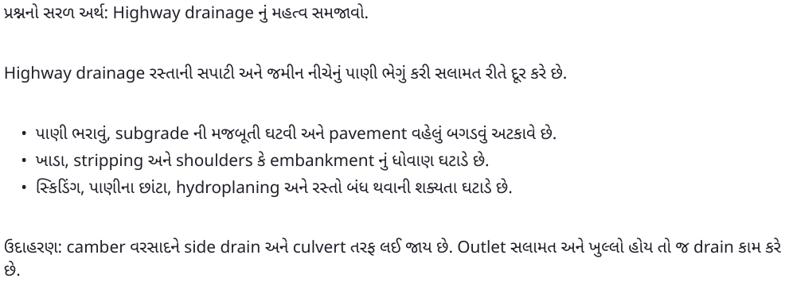
Q.4 (b) · Explain pre monsoon and post monsoon maintenance of railway track. · 4 marks
Monsoon track maintenance prepares the railway for heavy rain and repairs damage after it.
![Q.4 (b): preserved source formula, table or diagram, page 27. Extracted text context (formula notation may be incomplete): Before monsoon After monsoon Clear side drains, catchwater drains, culverts and bridge waterways; ensure outlets are open. Remove deposited silt / debris and restore drainage and damaged outlets. Inspect vulnerable banks, cuttings, bridges and scour protection; arrange materials and patrols. Inspect washouts, slips, scour, weak formation, ballast and bridge approaches; repair and record defects. Check track geometry and fastenings and plan communication / emergency protection. Restore ballast and geometry, replace defective components and lift restrictions only after authorised inspection.](summer-2026.assets/0042.webp)
Example: clear a culvert before rain, then check its bed and approaches for scour after a flood. During rain patrol vulnerable sites and protect any unsafe track immediately.
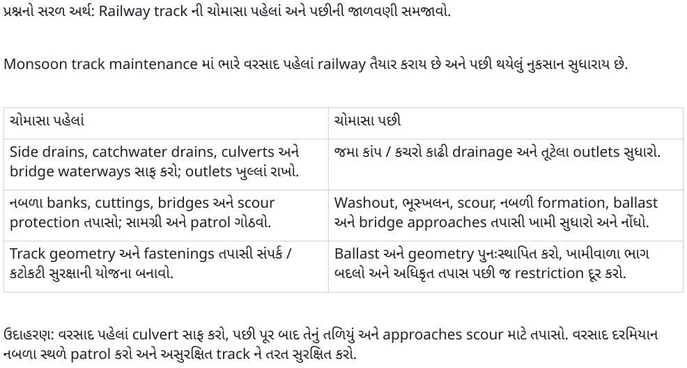
Q.4 (c) · Explain methods of fixing rails with prestressed concrete sleepers in detail. · 7 marks
Rail fastening holds the rail in its designed position on a prestressed concrete (PSC) sleeper, maintains gauge and transfers forces while providing resilience and insulation where required.
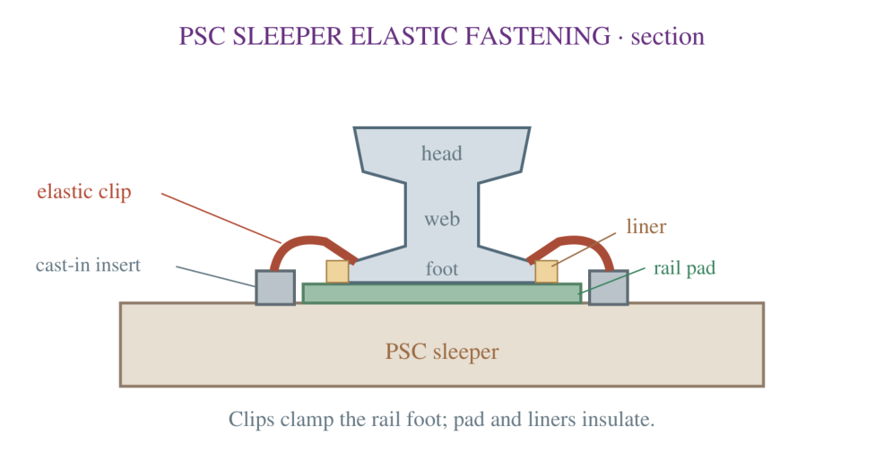
Schematic rail seat: rail head / web / foot, elastic clips, cast-in inserts, insulating liners, rail pad and PSC sleeper.
Construction — parts and purpose
1. PSC sleeper and cast-in inserts / shoulders: support the rail seat and anchor each side’s fastening.
2. Grooved rubber or other approved rail pad: lies beneath the rail foot, cushions impact and protects the concrete rail seat.
3. Liners / insulators: locate the rail laterally, distribute clip contact and provide electrical separation where specified.
4. Elastic rail clips (ERC): spring-steel clips, one at each side of the rail seat, engage inserts and exert a clamping toe load on the foot through the liners.
Working — fitting and inspection
1. Under an authorised track block, clean and inspect the sleeper seat and inserts; use components matching the approved rail and sleeper drawing.
2. Place the specified pad correctly on the seat and position the rail foot on it.
3. Fit the correct liners on both sides; drive or install the specified clips into their inserts using the approved tool and procedure.
4. Check clip seating, pad and liner position, gauge and required insulation. Replace missing, broken, loose or worn parts during maintenance.
Fastening arrangement Where used
ERC, e.g. Mk-III / Mk-V Common Indian Railways PSC sleeper arrangement; choose the exact approved clip, insert and liner combination.
Other engineered elastic clip or screw-clamp system
Used where an approved sleeper / track system specifies it; the anchorage and installation differ.
Example: two ERCs clamp one rail seat; each sleeper has two rail seats. Do not interchange incompatible clip or insert types. Installation, toe-load criteria and electrical checks follow the current railway instructions, not this schematic.
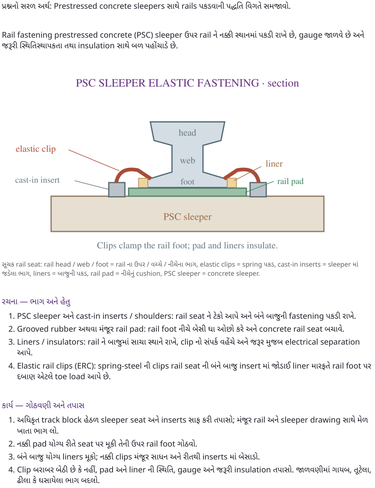
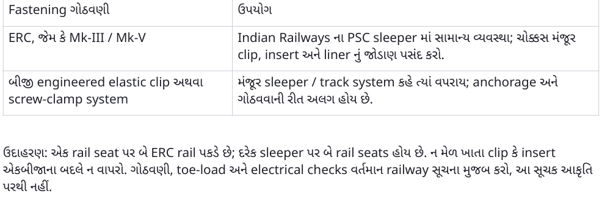
Q.4 (a) · Explain maintenance of surface and sub surface drainage system. · OR · 3 marks
Drainage maintenance keeps surface and underground water flowing away from the road or track foundation.
• Surface: remove silt, litter and vegetation from side drains, catch basins and culverts; repair lining and restore fall to the outlet.
• Subsurface: inspect collector pipes, filter outlets and inspection chambers; flush blockages and replace damaged pipes or clogged filter material.
• Check outlets and erosion after storms; repair scour and waterlogging promptly.
Example: clear a blocked road drain before monsoon. Do not discharge water onto a neighbouring property or an unstable slope.
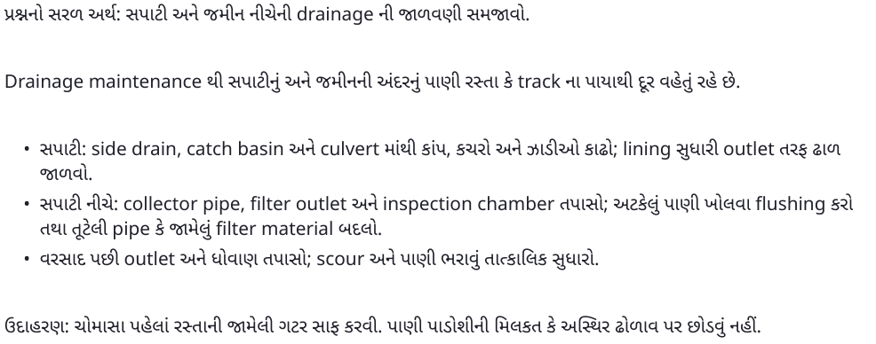
Q.4 (b) · Write factors affecting selection of railway gauge. · OR · 4 marks
Railway gauge is the clear distance between the inner faces of the two running rails, measured according to the applicable railway standard.
• Traffic: expected passenger / freight volume, axle loads and desired capacity.
• Speed and stability: required operating speed and rolling-stock characteristics.
• Terrain: sharp curves, steep gradients, tunnels and available land.
• Economy: initial works, structures, vehicles, maintenance and future expansion.
• Network compatibility: connection with existing lines and avoiding costly break-of-gauge transhipment; strategic and policy requirements.
Example: a new line joining an existing broad-gauge network generally benefits from compatible gauge. Final selection is a system-level policy and engineering decision.
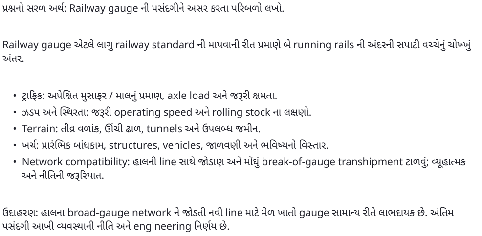
Q.4 (c) · Write short notes on “switches of rail” · OR · 7 marks
A rail switch or set of points is a movable arrangement that guides a train from one track toward a selected straight or diverging route.
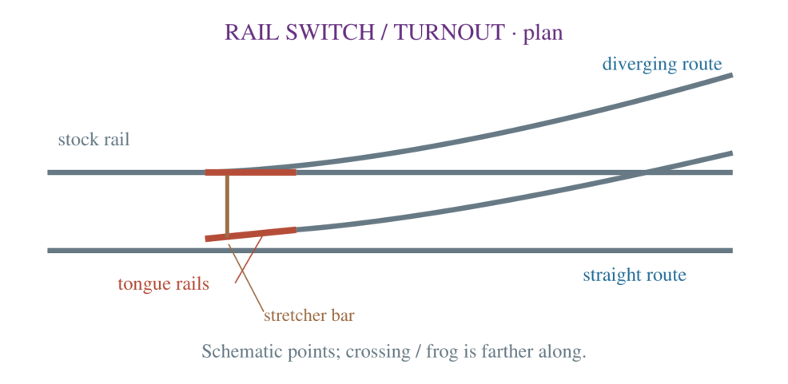
Symbolic plan, not a working drawing: stock rails, paired movable tongue rails, stretcher bar and the two routes. The crossing / frog lies farther along.
Construction — part and purpose
1. Stock rails: fixed running rails against which the movable tongues fit.
2. Tongue / switch rails: tapered movable rails; the thin toe moves and the thicker heel connects toward the lead rails.
3. Stretcher bars and slide chairs: connect the tongues and support / guide their movement.
4. Operating and locking mechanism: lever or point machine moves, detects and locks the points. Lead rails connect the switch to a separate crossing / frog.
Working — step and reason
1. Set the points for the intended route: one tongue fits closely against its stock rail while the other is open by the designed clearance.
2. Lock and detect the position through the authorised signalling system; the wheel flange follows the selected running path.
3. After use, inspect the toe fit, stretcher, fastenings and moving parts; clean and lubricate only as the railway permits.
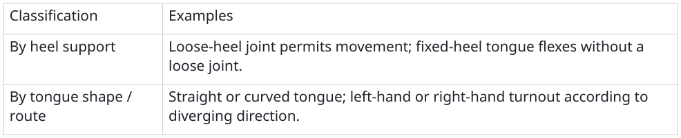
Example: points guide a train from a main track to a siding. Switches alone are not the complete turnout: lead rails and a crossing are also needed. Never operate or maintain points without railway authorisation and protection.
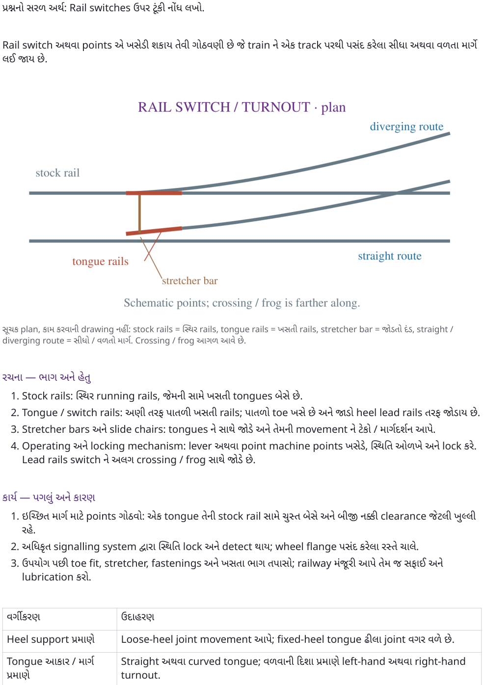
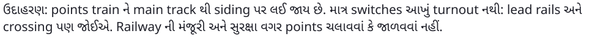
Question 5
Q5 · Harbour works and airports
Q.5 (a) · Why break water is required? Explain vertical type break water. · 3 marks
A breakwater protects a harbour from wave action. In a vertical breakwater, a near-vertical masonry / concrete wall or caisson is founded on a prepared base and mainly reflects incident waves.
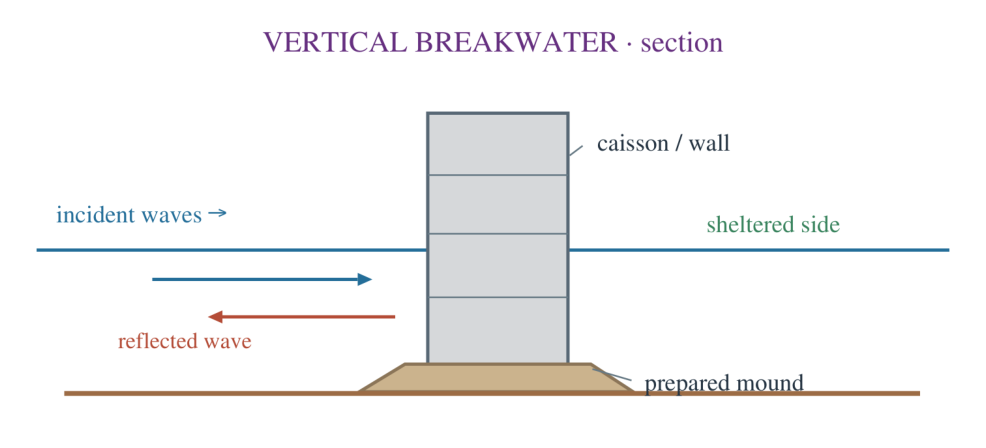
Schematic section: vertical wall or caisson, incident and reflected waves, prepared foundation mound and sheltered side.
• Its wall must resist wave forces, sliding, overturning and foundation problems; some wave overtopping can still occur.
• It can give sheltered water on its inner side for harbour operations.
Example: a caisson breakwater at a suitable deep-water harbour. The foundation, wave climate and environmental effects determine feasibility.
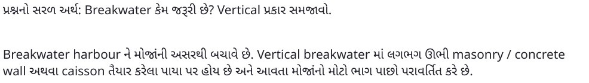
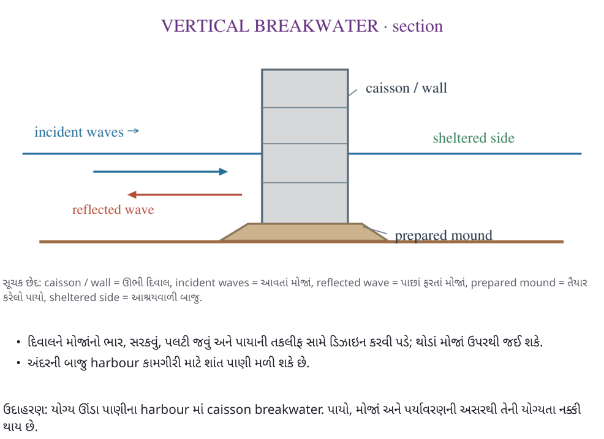
Q.5 (b) · Enlist factored to be considered while selection and design of berthing structure. · 4 marks
A berthing structure provides a safe position for a vessel to lie alongside for passengers or cargo. Its selection and design depend on:
• Design vessels and traffic: length, beam, draft, displacement, ship type, frequency and future demand.
• Water and climate: required depth and under-keel clearance, tides, waves, currents, wind and siltation.
• Site and foundation: shoreline, seabed soil / rock, geotechnical capacity, scour and seismic conditions.
• Operational loads: berthing impact, mooring forces, cargo / equipment loads and ship movement.
• Facilities and economy: quay versus jetty, fenders, bollards, cargo handling, land access, construction, maintenance and environmental permissions.
Example: a deep-draft cargo vessel needs sufficient channel and berth depth as well as suitable fenders. Exact sizes require a site-specific marine design.
Q.5 (c) · Explain various mooring accessories with sketch. · 7 marks
Mooring holds a vessel in a safe position at a berth despite wind, current, waves and tidal changes. Suitable accessories transfer the forces safely to the berth.
Plan, not to scale: vessel alongside quay; head, stern and spring lines lead to bollards, and fenders protect the contact zone.
Accessories — part and purpose
1. Mooring lines / ropes: head and stern lines help hold the ends; breast lines limit movement away from the berth; spring lines limit movement along the berth.
2. Bollards / cleats: strong fixed fittings on the quay or vessel to which lines are secured.
3. Fairleads / chocks: guide a line and reduce sharp changes of direction and chafe.
4. Winches / capstans and quick-release hooks: handle, tension or safely release mooring lines; their use follows the approved procedure.
5. Fenders: absorb berthing contact energy and protect ship and structure; they are protective berth fittings, not substitutes for mooring lines.
6. Mooring dolphins / buoys and anchors: provide separate line attachment or holding points where the layout requires them.
Working — step and reason
1. Bring the vessel alongside at a controlled speed and place fenders between ship and berth.
2. Lead and secure appropriate head, stern, breast and spring lines to the designated fittings.
3. Adjust line tension as tide or loading changes, keep people out of snap-back zones and inspect lines and fittings.
Example: spring lines restrain fore-and-aft movement while breast lines restrain movement away from the quay. Line arrangement and capacity must be engineered for the vessel, weather and local port procedure.
Q.5 (a) · Enlist the factors to be considered in airport planning? · OR · 3 marks
Airport planning coordinates airside, terminal and landside facilities for safe and efficient present and future demand.
• Forecast passenger / cargo demand and select the design aircraft and required capacity.
• Consider site area, land acquisition and future expansion, terrain, soil and drainage.
• Study wind, weather, airspace, approach obstacles and runway orientation.
• Plan runway, taxiways, apron, terminal, rescue / fire services and utilities.
• Provide road / public-transport access and assess noise, environment, cost and regulatory approvals.
Example: allow land for a later terminal expansion when demand is forecast to grow. All choices require the applicable aviation standards and site studies.
Q.5 (b) · List components of aircraft and give their function. · OR · 4 marks
An aircraft has structural and operating components that provide lift, propulsion, control and safe ground operation.
Schematic plan: nose, fuselage, wings, engines and tail plane; landing gear is below and not shown in plan.
![Q.5 (b) OR: preserved source formula, table or diagram, page 40. Extracted text context (formula notation may be incomplete): Component Main function Fuselage Carries crew, passengers or cargo and joins the main components. Wings and control surfaces Wings provide lift; ailerons help control roll. Tail / empennage Stabilises the aircraft; rudder and elevator control yaw and pitch. Engines / propulsion Provide thrust for movement. Landing gear Supports the aircraft on the ground and during take-off, landing and taxiing.](summer-2026.assets/0062.webp)
Example: the landing gear supports the aircraft while taxiing from apron to runway. The exact configuration varies by aircraft type.
Q.5 (c) · Enlist and explain elements covered in terminal building. · OR · 7 marks
An airport terminal is the interface where passengers and baggage move between landside access and airside aircraft operations.
Simplified departure sequence: entrance → check-in → security → departure hall → gate. Arrivals follow a separate route through baggage claim to exit.
Elements — part and purpose
1. Landside access and entrance: roads, parking, kerb, public transport and accessible entrance bring passengers to the building.
2. Ticketing, information and check-in: provide assistance, verify travel and accept baggage.
3. Baggage handling: screening, sorting and transfer move checked bags to aircraft; baggage claim serves arrivals.
4. Security and border controls: security screening and, where applicable, immigration / customs protect and regulate the flows.
5. Departure lounge and gates: provide waiting space, flight information and controlled boarding to aircraft.
6. Arrivals and exit: guide arriving passengers through required checks and baggage collection to ground transport.
7. Passenger and building services: toilets, drinking water, seating, retail, accessibility, fire safety, emergency exits and utilities support both flows.
Working — passenger flow
1. For departure: enter, check in / drop bags, pass security and go to the assigned gate.
2. For arrival: leave the aircraft, pass required border controls, collect bags and exit to landside transport.
3. Keep arrivals, departures, public and secure areas separated as required by the airport layout and security rules.
Example: a domestic terminal may not need international immigration counters, but still needs screening and baggage handling. Capacity, layout and safety requirements depend on traffic and applicable aviation regulations.